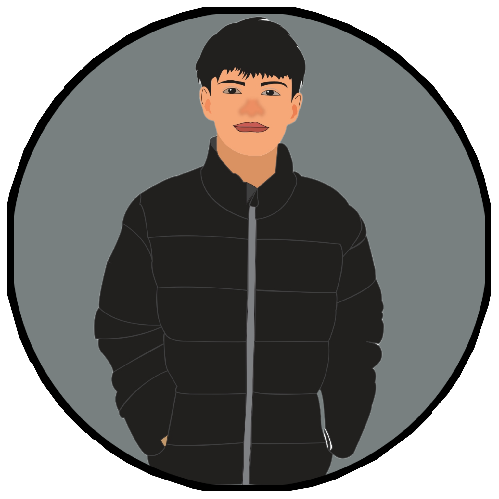
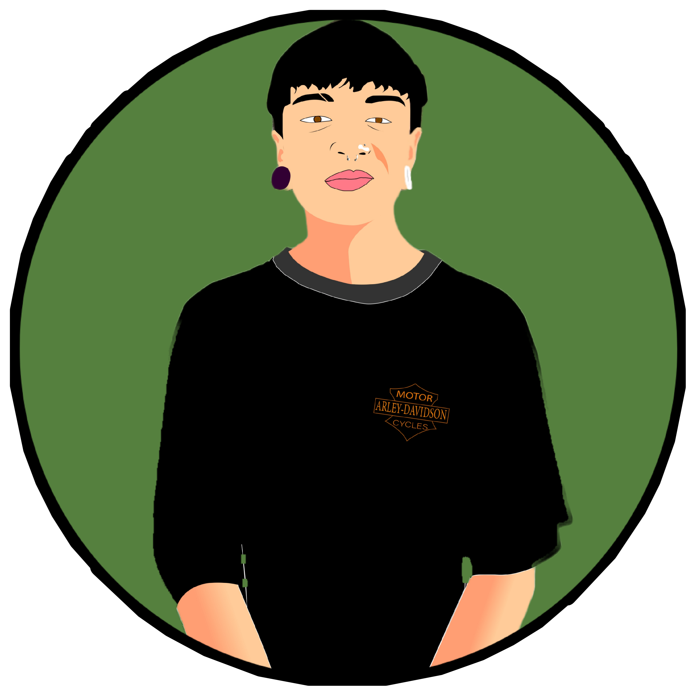

Explora el fascinante universo de la moda en "Arte Libre", tu destino definitivo para expresar tu estilo a través de
los pendientes más elegantes y creativos. Cada par de pendientes es una obra de arte única, cuidadosamente diseñada para realzar tu belleza y resaltar tu personalidad.
Desde elegantes piezas clásicas hasta audaces creaciones vanguardistas, en Arte Libre encontrarás la joya perfecta para cada ocasión. Descubre la libertad de expresión a través
de la joyería en una tienda que celebra la diversidad y la creatividad. ¡Déjate llevar por la expresión artística en cada pendiente de Arte Libre!
DIRECTORA
JULIET VELASQUEZ
Sinopsis
Adéntrate en el vibrante mundo de la moda juvenil con "Kuroe", donde el estilo y la individualidad convergen para crear una experiencia de vestimenta única.
Inspirada en las últimas tendencias urbanas y el dinamismo de la juventud, Kuroe ofrece prendas que van más allá de la moda, son expresiones de identidad.
Desde estilos casuales hasta atuendos vanguardistas, cada prenda está diseñada para capturar la esencia de la juventud contemporánea. Descubre la fusión perfecta de comodidad, creatividad y
autenticidad en cada pieza de Kuroe. Prepárate para destacar, para brillar, para ser auténticamente tú.
DIRECTOR
CRISTIAN CIFUENTES

Sinopsis
Adéntrate en el asombroso universo de la moda con Wonder. Aquí, la creatividad y la elegancia convergen para ofrecerte prendas que te invitan a
explorar tu propio estilo único. Cada diseño de Wonder es una expresión de maravilla y singularidad, fusionando la moda contemporánea con un toque de magia.
Desde prendas versátiles hasta piezas audaces, Wonder te guía hacia un viaje de descubrimiento de tu estilo personal.
Descubre el encanto en cada puntada y la maravilla en cada detalle. Viste "Wonder" y experimenta la magia de ser extraordinario.
DIRECTORA
MELANY CORTES
Sinopsis
Piigu's, el mundo encantador para los pequeños exploradores de la moda. Sumérgete en la alegría y la diversión con nuestra exclusiva colección de zapatos para niños.
En Piigu's, cada paso es una aventura llena de colores, comodidad y estilo. Desde los primeros pasos hasta las travesuras diarias, nuestros zapatos están diseñados para
acompañar a los niños en sus momentos más especiales. Con atención a la calidad y detalles encantadores, "Piigu's" transforma cada día en una experiencia única para los pequeños pies.
Descubre el mundo mágico de la moda infantil con Piigu's.
DIRECTOR
IVAN REYES

Sinopsis
Federal, más que una tienda, es un destino de estilo para la juventud contemporánea. Explora las últimas tendencias y encuentra tu expresión única en moda juvenil. En "Federal", fusionamos la frescura del diseño con la autenticidad de la individualidad.
Desde prendas casuales hasta piezas destacadas, cada artículo en nuestra tienda refleja la energía vibrante y la diversidad de la juventud.
Rompe las reglas, redefine tu estilo y abraza la moda con confianza en Federal. Descubre el espacio donde la moda y la actitud se encuentran para crear un estilo que es audaz, libre y totalmente tuyo.
¡Bienvenido a Federal, donde la moda juvenil cobra vida!